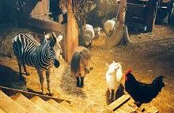
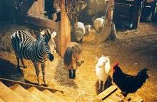

Heroe a Rayas
Descripción
Durante una terrible tormenta un circo pierde accidentalmente a una pequeña cebra. El criador de caballos Nolan Walsh rescata al potrillo y se lo lleva a casa. Walsh entrenaba caballos de carreras con éxito, pero actualmente lleva una vida tranquila con su hija en su granja de Kentucky. En cuanto Rayas ve la pista de carreras que hay al lado la de la granja sabe que ha encontrado su meta.

Director
FREDERIK DU CHAU
Du Chau asistió a la Academia de Bellas Artes en su ciudad natal de Gante, donde estudió cine y se especializó en animación con Raoul Servais. Después de graduarse, trabajó para Walt Disney Animation France y luego como animador independiente y dirigió varios comerciales locales, combinando acción en vivo y animación.
Peliculas que dirigió
Reparto
Nolan Wash
Nolan solía ser un increíble entrenador de caballos de carreras, pero desde que su esposa Carolyn murió trágicamente en un accidente de carreras, ahora se resiste a dejar que su hija Channing se acerque a una silla de montar, por temor a que se lastime si monta, Pronto, Nolan, eventualmente cede al darse cuenta de cómo su esposa querría que Channing montara y cuánto Channing ama Stripes.

Rayas
Es una cebra, que fue accidentalmente abandonada por un circo cuando era un potro durante una fuerte tormenta, fue rescatada por un granjero de la zona, que entrenaba caballos de carreras. Cuando rayas ve la pista de carreras que hay al lado de la granja sabe que ha encontrado su meta.

Channing Walsh
Channing es una granjera que descubre un potro cebra perdido al que llama Stripes. Su madre murió en una carrera de caballos, por lo que su padre, Nolan, no la deja participar en el Abierto de Kentucky. Cuando crezca, Channing está decidida a seguir los pasos de su madre. Con la ayuda de Stripes, Channing desafía a su padre y lo ayuda a ver lo que se ha estado perdiendo. En el proceso, ella y su nuevo amigo derrotan
Tucker
Tucker es un sabio pony Shetland y el tritagonista de la película Racing Stripes. Tiene la voz de Dustin Hoffman, Tucker, después de haber visto en secreto a Stripes en las Blue Moon Races, se le acerca y le sugiere que primero obtenga el entrenamiento adecuado antes de intentar competir. Stripes, que necesita un jinete, elige a Channing y convence a Goose, el pelícano.
Goose
Goose es un pelícano blanco estadounidense y un personaje secundario,Goose afirma que se mudó a la granja de Nolan Walsh para escapar de varios otros pájaros que lo habían golpeado por alguna razón desconocida,
Plataformas de streaming
| Link | Precio | Valoración | |
|---|---|---|---|
| Comprar | Amazon | 7,71€ | 4.5/5 |
| directv | 9,99€ | 5/10 | |
| Google Play | 7,71€ | 4.6/5 | |
| Alquilar | Amazon | 2,88€ | 4.6/5 |
| Microsoft | 2,88€ | 4/5 | |
Galeria


 

Opinion
Links
Para obtener más información sobre la película, por favor visite la página de Wikipedia.
Si desea conocer más detalles sobre esta película, puede hacer click en el siguiente enlace: Film Affinity.